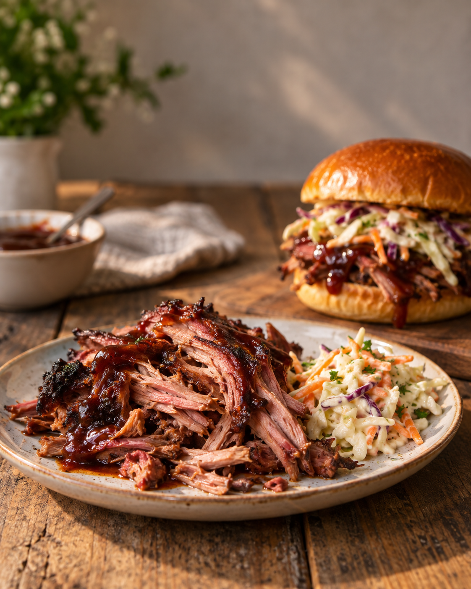

Unsere Klassiker · Grill & BBQ
Pulled Kassler
Zart gezupft, mit Cola und einem Hauch Kirsche

Zutaten
2–2,5 kgKasslernacken ohne Knochen
2 ELSenf
2–3 ELBBQ-Gewürzmischung ohne zusätzliches Salz
3 großeZwiebeln
500 mlCola
500 mlKirschsaft; alternativ durch weitere Cola ersetzen
Nach BedarfJuli's BBQ Sauce
Das brauchst du
- Grill oder BackofenFür gleichmäßige 120–130 °C
- Bräter mit DeckelOder eine dicht verschließbare Ofenform
- FleischthermometerFür Kerntemperatur und Garprobe
- Zwei GabelnZum Zupfen des fertigen Kasslers
Zubereitung
- Das Kassler trocken tupfen, rundherum dünn mit Senf bestreichen und mit der BBQ-Gewürzmischung einreiben. Kein zusätzliches Salz verwenden, da Kassler bereits gepökelt ist. Abgedeckt mindestens 2 Stunden, am besten über Nacht, im Kühlschrank ziehen lassen.
- Das Fleisch etwa 45 Minuten vor dem Garen aus dem Kühlschrank nehmen. Grill oder Backofen auf 120–130 °C indirekte Hitze beziehungsweise Ober-/Unterhitze vorheizen. Die Zwiebeln schälen, in dicke Ringe schneiden und auf dem Boden eines Bräters verteilen.
- Das Kassler auf die Zwiebeln legen und zunächst ohne Deckel 2–3 Stunden garen, bis es eine kräftige Farbe angenommen hat. Auf dem Grill kann in dieser Phase etwas mildes Räucherholz verwendet werden.
- Cola und Kirschsaft seitlich in den Bräter gießen. Das Fleisch soll auf den Zwiebeln liegen und nicht vollständig in der Flüssigkeit schwimmen. Den Bräter dicht verschließen und weitere 3–4 Stunden garen.
- Ab etwa 90 °C Kerntemperatur die Zartheit prüfen: Ein Thermometer oder Holzspieß sollte fast ohne Widerstand in das Fleisch gleiten. Meist ist das Kassler bei 90–93 °C fertig. Danach zugedeckt 30–45 Minuten ruhen lassen.
- Das Fleisch mit zwei Gabeln auseinanderzupfen. Etwas vom entfetteten Bratensaft und nach Geschmack Juli's BBQ Sauce untermischen, bis das Pulled Kassler schön saftig ist.
So schmeckt es besonders gut
- Pur serviertMit Coleslaw und etwas Juli's BBQ Sauce.
- Als BurgervarianteBurger-Buns mit Pulled Kassler, Coleslaw und Juli's BBQ Sauce belegen.